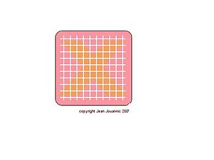
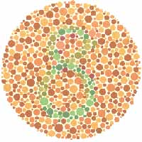

Daltonismo
 De: La Frikipedia, la enciclopedia extremadamente seria.
De: La Frikipedia, la enciclopedia extremadamente seria.
| De la serie enfermedades y padecimientos:
|
| Daltonismo
|
|
|
| Los arbitros daltonicos lo pasan muy mal.
|
|
| Nombre común
|
Daltonismo (Logico)
|
| Clase
|
Primera clase
|
| Afecta a
|
La vista
|
| Número de enfermos
|
La tira y mas
|
| Pruebas clínicas
|
Tacto rectal
|
| Extendida en
|
Todo el mundo
|
| Diagnosis (síntomas)
|
confundir manzanas con tomates
|
| Tratamiento
|
No hay
|
| Prognosis (expectativas)
|
Muchas
|
| ¿Contagiosa?
|
No
|
| Dieta
|
evitar comer cosas rojas
|
| Caso famoso
|
----------
|
La discromatopsia o daltonismo es aquella enfermedad caracterizada por tener extraños sintomas como confundir los simpsons con los pitufos debido a la borrachera. La enfermedad es padecida por 500.000 personas de las cuales 250.000 son la mitad.
¿Es usted daltonico?
El daltonismo, a pesar de ser una anomalía sumamente grave y letal, es bastante fácil de diagnosticar. Si usted cumple alguna de las siguientes características, consíderese un daltónico incurable:
- Usted siempre creyo que los 3 reyes magos eran afroamericanos.
- Sus amigos se burlan de usted cuando dice que sus ojos son color verde limón.
- Cuando era pequeño sus maestras le decían: "Los cerdos no son de color naranja
, ni las personas azul celeste". Nunca lo entendió.
- Curiosamente, ha atropellado a varios peatones en las proximidades de los semáforos al cruzar éstos cuando el semáforo estaba claramente en verde para usted.
- Sus manzanas saben a tomate.
- La gente le pregunta -entre sonrisitas- si le viste Ágata Ruiz de la Prada y usted no entiende porqué.
- Ha recibido una paliza en un partido de Bangladesh y Japón al intentar celebrar un gol con la afición equivocada.
- Le gusta el uniforme de la Guardia Civil, aunque no entiende que sea del mismo color que el del butanero.
- No entiende porque los mocos que se saca son de color azul.
- El loro que le vendieron en el mercadillo de su graznido bastante desagradable.
- No ha conseguido probar nunca el Calippo de lima-limón porque el heladero siempre le da el de fresa a pesar de que le dice: "Éste, eh, no; el de al lado".
- Su amigo le ha preguntado alguna vez porqué ha comprado 50 lápices y dice que son colores
¿ No se convence aun?
A contestado con un Si, todas las preguntas anteriores y aun asi es usted tan burro que se niega a afrontar su enfermedad. Aquí tenemos otro test para que aprenda de una vez que si es daltonico .Cohoné.

- ¿Que ve en la foto de arriba?
- a) Una X detras de una cuadricula
- b) Un circulo detras de una cuadricula
- c) Mmmm. va ha empezar una peli porno.Aghh.

- ¿Que ve en la foto de arriba?
- a) Un 8
- b) Un 12
- c) Las lentejas de mi madre.
Véase también
Frikipedia 2005-2016, Licencia
GFDL 1.2 - Extraído por FrikiLeaks